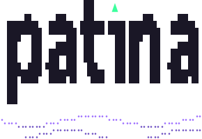
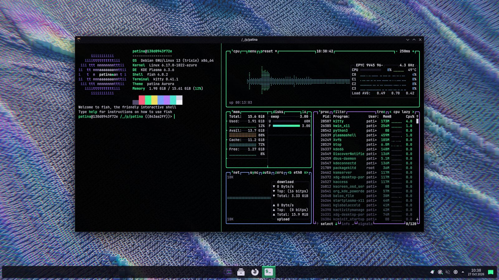
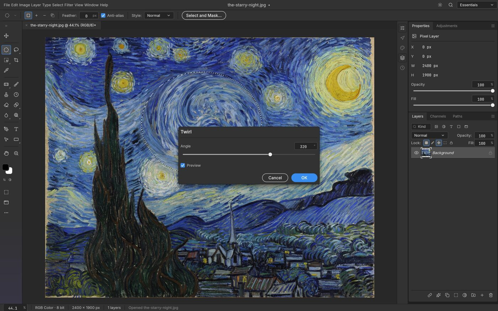
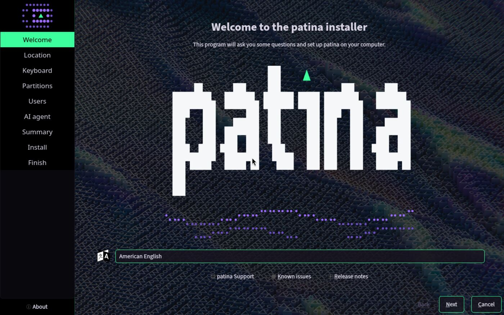

The stylish, free alternative to Windows
A complete, free desktop for PCs and ARM laptops, with its own assistant, kortex. Say what you need in plain words, and it fixes the printer, installs the app or files the ticket. The AI is yours to pick: your own model on your computer, a European one if you like, or a cloud.

Meet kortex
Press Windows + Space, type ai and what you need. kortex hands it to the AI agent you pick, opencode or Hermes, and gets it done. It stays off until you turn it on, in the installer or later.
Your own model right on your PC, like Mistral's from France: private, and it works offline. Or a cloud, European ones first.
Your PC's settings, apps and printer, and the services you connect, from Nextcloud to Linear.
Day one
One good, free app for every everyday job.
All your accounts in one inbox.
Sync in the EU or on your own server.
Opens Word, Excel and PowerPoint files.
Passwords in a file only you hold.
Telemetry and sponsored content off.
Encrypted chat on Matrix.
Photos, video and PDFs.
Music, and code when you get curious. One command adds them.
Euro-Office, the free office suite from a European consortium, opens and saves Word, Excel and PowerPoint files on your computer. No account, no subscription, and it works offline.
Nextcloud adds what Microsoft 365 does online: your files on every device, shared folders, calendars and contacts, and editing together in the browser.
One thing you bring: a Nextcloud to connect to, on your own server or hosted in the EU. patina sets up the apps, not the cloud.
.docxEuro-Office.xlsxEuro-Office.pptxEuro-OfficeFree counterparts of Photoshop, Illustrator, Premiere, Acrobat, Figma and more. One launcher installs the ones you pick and keeps them up to date.

And PhotoCraft is one of thirteen, all ready for early use:
PCs and ARM
No separate ARM edition and no cut-down version: the same apps and look, for x86-64 PCs and 64-bit ARM. The ARM installer is built and boot-tested with every change, next to the PC one, and comes out once it has passed its first real install.
x86-64 with the installer; 64-bit ARM on Debian with one command.
From Debian's own Raspberry Pi image.
Like the ThinkPad T14s Gen 6 and the Yoga Slim 7x. Debian already runs on them.
Once Debian's kernel supports the new chips.
Windows-only for now. patina follows as soon as Linux runs on them.
Apple Silicon Macs: in a virtual machine today, with Debian 13 for ARM in UTM and patina's install command. Natively once Debian's own kernel supports these Macs; the Asahi Linux project is bringing that support to Linux.
What patina stands for
Every app it installs is free and open source. Anything else is opt-in.
No account to create, no telemetry. Your files sync where you choose.
Debian 13 underneath. Security updates come straight from Debian.
The look
Installer, login, apps and terminal share one theme, in light or true-black dark.
Light mode
Dark mode, true black
Where things stand
patina is in alpha, and the installer is out for testers: on x86-64 PCs, and on Windows in a virtual machine. Boot from USB or start TryPatina.exe, answer a few questions, and tell us what you see.

Install Debian, run one command.
Boot from USB, answer a few questions. Out for testers, on PCs and on Windows.
Raspberry Pi and Snapdragon X Elite laptops.
The first release for everyone.
Try it
Both get the installer alpha, made for testers: expect rough edges, and tell us what you see.
One program sets up a virtual machine, downloads patina's installer and puts patina on a virtual disk. Windows and your files stay as they are.
Write it to a USB stick and start your PC from it, or open it in a virtual machine. The installer fetches the rest from Debian during the install, so it needs the internet.
SHA256SUMS before you write it.On ARM, an Apple Silicon Mac included: install Debian 13 for ARM, then run patina's install command. The ARM installer follows once it has passed its first real install.
How it is made
Every line is public and GPL. patina builds on what Debian and KDE do well, and adds nothing that needs its own security team. Themes and fixes are welcome.
The installer alpha is out for testers. Try it on Windows or a PC, report what you see, and star it if you want this to exist.
